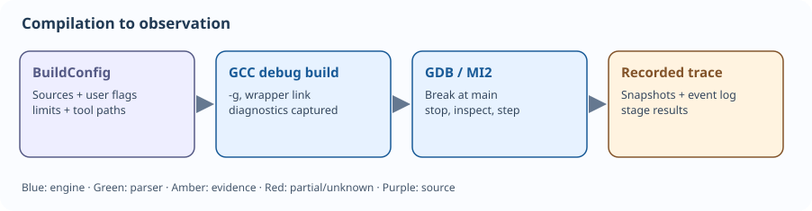

Compilation and compiler diagnostics #
Level 1 · Intuition #
Visual C needs a real executable with debug information, not a speculative reading of C text. It runs GCC on the user's sources, preserving warnings/errors as structured diagnostics. If compilation fails, the trace records that failure; it does not pretend the debugger ran. The same project can produce a separate sanitizer build for a later diagnostic execution.


Level 2 · Build lifecycle #
BuildConfig names the primary C file, additional sources, object files, defines, include/library paths, flags and working directory. TraceConfig adds inferior arguments, resource limits, output path, optional Clang pass and tool overrides. compiler::compile_project builds the debug variant with c_runtime/alloc_tracker.c via -Wl,--wrap=malloc, calloc, realloc, free, and a separate ASan/UBSan variant without the wrapper. User flags follow engine defaults; explicit user overrides can change fidelity and must be considered when interpreting a trace. The compiler probes whether GCC supports JSON diagnostics, SARIF-to-stderr or plain-text fallback; it normalizes diagnostic kind, file, line, column and message. Tool processes are supervised with bounded output and deadline.
When GCC fails, compiled_successfully=false, execution_status=compile_failed, compiler stage failed, debugger and later analyses skipped, and snapshots=[]. A compilation pipeline failure (tool launch/deadline) is recorded separately from GCC rejecting source. A successful debug build enables DWARF extraction and GDB control. Sanitizer compilation is not evidence that the sanitized process later reproduced a crash.
Level 3 · Files, signatures and example #
src/config.rs::{BuildConfig, TraceConfig, SanitizerTrigger}describe the request.src/compiler.rs::{CompileOptions, compile_project, detect_diagnostics_format}handle both build variants and error formats.src/trace.rs::trace_program_innerassignsstage_results.compilerand short-circuits on failed compilation.src/models.rs::{CompilerDiagnostic, StageResults, StageResult}preserve structured outcomes.src/supervisor.rsowns subprocess groups and session deadlines.
// Source fixture: fixtures/c/phase8b_defined.c (abridged)
int oracle_global = 41;
static int checkpoint(struct Packet *packet, int *alias, int *heap, int sum) {
volatile int value = packet->items[1] + *alias + heap[2] + sum + oracle_global;
return value;
}cargo build --release
target/release/c-trace-engine fixtures/c/phase8b_defined.c \
--trace-mode dual --max-steps 350 --timeout 50 --no-pretty \
--sanitizer-trigger never --output /tmp/visual-c-defined.jsonFrom the final integrated audit, a deliberately invalid return missing_symbol; produced an engine JSON trace with execution_status="compile_failed", one compiler diagnostic and zero snapshots/events. Consult practical usage for safe output inspection and diagnostics for independent analysis stages.